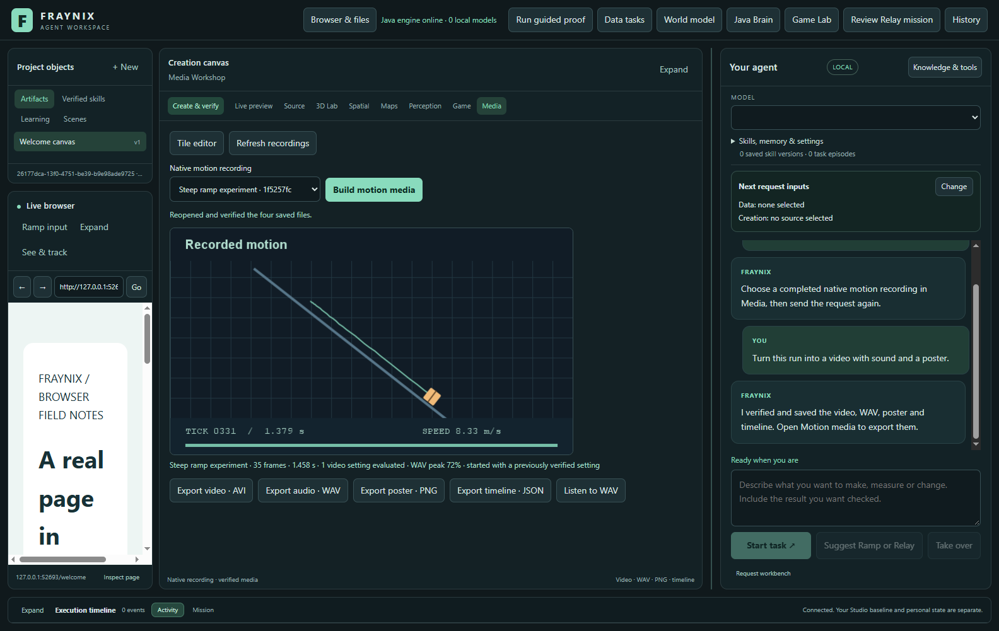
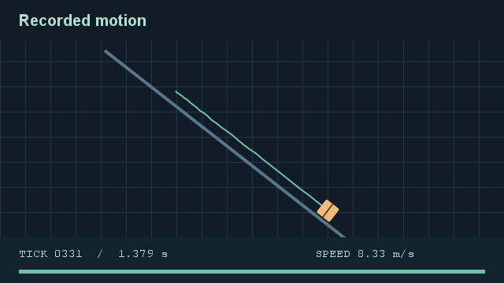

Create verified motion media without a language model
Reopen, listen to, and examine a measured motion media package with the original native source attached.
Listen to the verified steep-run audio.
Chat builds four verified media files with zero local models

The saved motion media reopens with its original receipt and exports

The actual PNG poster rendered from the steep recording
System files
Open source